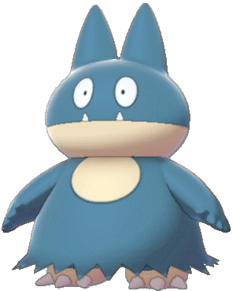

Snorlax
TIPO


Snorlax, un Pokémon de tipo Normal de gran tamaño y aspecto robusto, es reconocido por su naturaleza apacible y dormilona. Con una piel azul grisácea y una panza prominente, Snorlax exhibe una expresión facial tranquila. Su habilidad distintiva radica en su enorme resistencia y su capacidad para dormir largas horas, lo que se refleja en su gran cantidad de puntos de salud (PS) y en su capacidad para aprender movimientos poderosos como "Bostezo" y "Descanso".